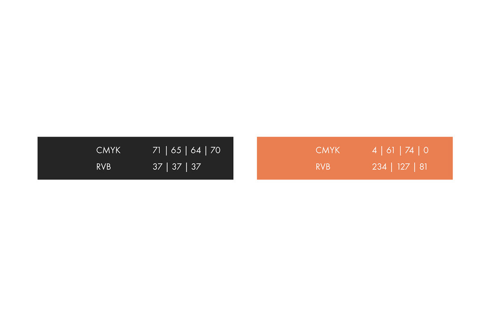
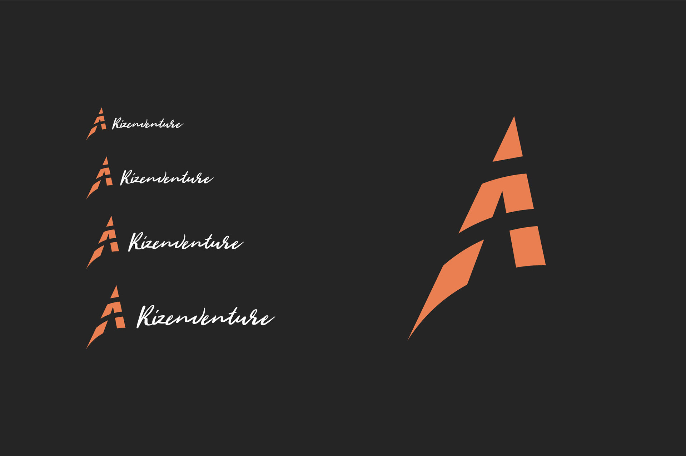
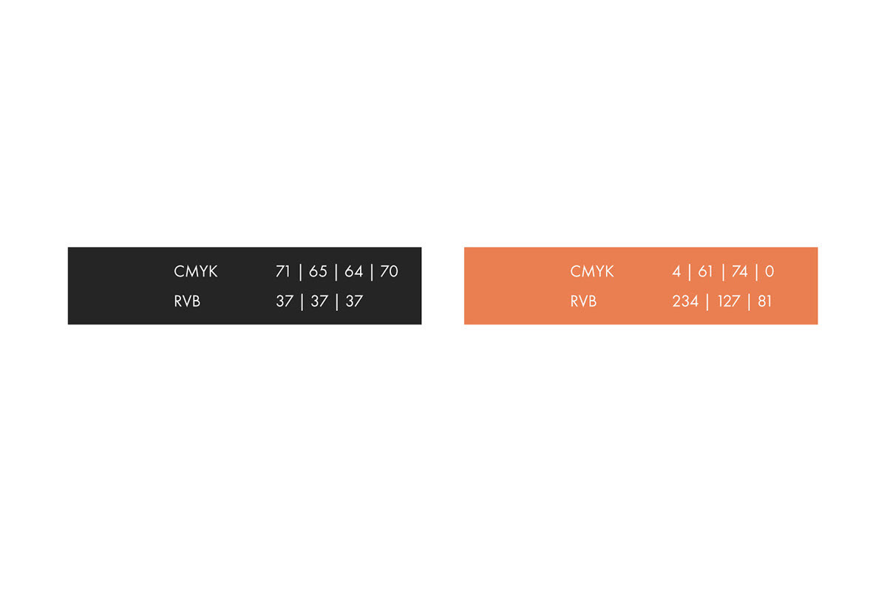
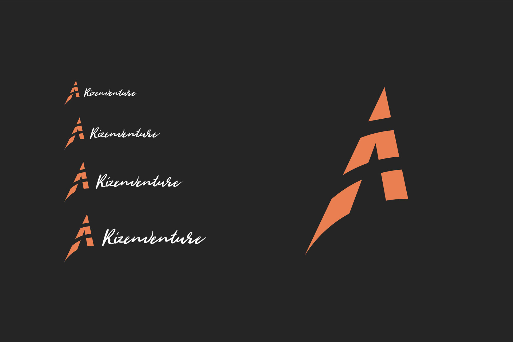

Rizenventure
Rizenventure est un site web ayant pour but d'aider les jeunes à s'adapter à l’économie dans un contexte ludique. Ce site propose donc des activités extérieurs comme du camping ou du ski. Le nom Rizenventure provient de la combinaison de "rise" et "aventure" - l'élévation et l'aventure. Cela reflète les 2 principales essences du site et son but. Évidemment, ils ont été les 2 mots-clés principaux pour forger leur identité. Le logo a la forme d'une tente et est fractionné horizontalement pour illustrer quelque chose de construit comme le serai une maison avec des briques. J'aime aussi la façon dont la tente pointe vers le haut. Cela montre un certain dynamisme à l'élévation. Le marron orangé était une des requêtes du client afin d'associer le logo à l'extérieur sauvage. La police utilisée est Wild Youth, l'aspect cursive reflète un sentiment sauvage.
 


